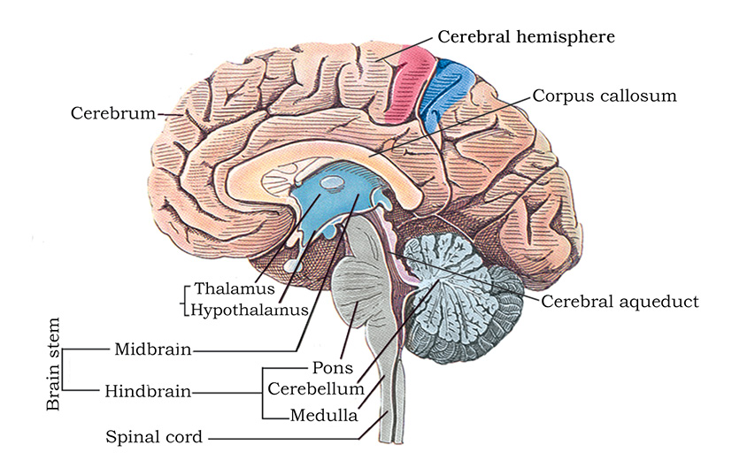

Chapter 21
Neural Control and Coordination
Neural Control and Coordination

21.1 Neural System
21.2 Human Neural System
21.3 Neuron as Structural and Functional Unit of Neural System
21.4 Central Neural System
21.5 Reflex Action and Reflex Arc
21.6 Sensory Reception and Processing
As you know, the functions of the organs/organ systems in our body must be coordinated to maintain homeostasis. Coordination is the process through which two or more organs interact and complement the functions of one another. For example, when we do physical exercises, the energy demand is increased for maintaining an increased muscular activity. The supply of oxygen is also increased. The increased supply of oxygen necessitates an increase in the rate of respiration, heart beat and increased blood flow via blood vessels. When physical exercise is stopped, the activities of nerves, lungs, heart and kidney gradually return to their normal conditions. Thus, the functions of muscles, lungs, heart, blood vessels, kidney and other organs are coordinated while performing physical exercises. In our body the neural system and the endocrine system jointly coordinate and integrate all the activities of the organs so that they function in a synchronised fashion.
The neural system provides an organised network of point-to-point connections for a quick coordination. The endocrine system provides chemical integration through hormones. In this chapter, you will learn about the neural system of human, mechanisms of neural coordination like transmission of nerve impulse, impulse conduction across a synapse and the physiology of reflex action.
21.1 Neural System
The neural system of all animals is composed of highly specialised cells called neurons which can detect, receive and transmit different kinds of stimuli.
The neural organisation is very simple in lower invertebrates. For example, in Hydra it is composed of a network of neurons. The neural system is better organised in insects, where a brain is present along with a number of ganglia and neural tissues. The vertebrates have a more developed neural system.
21.2 Human Neural System
The human neural system is divided into two parts :
(i) the central neural system (CNS)
(ii) the peripheral neural system (PNS)
The CNS includes the brain and the spinal cord and is the site of information processing and control. The PNS comprises of all the nerves of the body associated with the CNS (brain and spinal cord). The nerve fibres of the PNS are of two types :
(a) afferent fibres
(b) efferent fibres
The afferent nerve fibres transmit impulses from tissues/organs to the CNS and the efferent fibres transmit regulatory impulses from the CNS to the concerned peripheral tissues/organs.
The PNS is divided into two divisions called somatic neural system and autonomic neural system. The somatic neural system relays impulses from the CNS to skeletal muscles while the autonomic neural system transmits impulses from the CNS to the involuntary organs and smooth muscles of the body. The autonomic neural system is further classified into sympathetic neural system and parasympathetic neural system.
21.3 Neuron as Structural and Functional Unit of Neural System
A neuron is a microscopic structure composed of three major parts, namely, cell body, dendrites and axon (Figure 21.1). The cell body contains cytoplasm with typical cell organelles and certain granular bodies called Nissl’s granules. Short fibres which branch repeatedly and project out of the cell body also contain Nissl’s granules and are called dendrites. These fibres transmit impulses towards the cell body. The axon is a long fibre, the distal end of which is branched. Each branch terminates as a bulb-like structure called synaptic knob which possess synaptic vesicles containing chemicals called neurotransmitters. The axons transmit nerve impulses away from the cell body to a synapse or to a neuro-muscular junction. Based on the number of axon and dendrites, the neurons are divided into three types, i.e., multipolar (with one axon and two or more dendrites; found in the cerebral cortex), bipolar (with one axon and one dendrite, found in the retina of eye) and unipolar (cell body with one axon only; found usually in the embryonic stage). There are two types of axons, namely, myelinated and non-myelinated. The myelinated nerve fibres are enveloped with Schwann cells, which form a myelin sheath around the axon. The gaps between two adjacent myelin sheaths are called nodes of Ranvier. Myelinated nerve fibres are found in spinal and cranial nerves. Unmyelinated nerve fibre is enclosed by a Schwann cell that does not form a myelin sheath around the axon, and is commonly found in autonomous and the somatic neural systems.

Figure 21.1 Structure of a neuron
21.3.1 Generation and Conduction of Nerve Impulse
Neurons are excitable cells because their membranes are in a polarised state. Do you know why the membrane of a neuron is polarised? Different types of ion channels are present on the neural membrane. These ion channels are selectively permeable to different ions. When a neuron is not conducting any impulse, i.e., resting, the axonal membrane is comparatively more permeable to potassium ions (K+) and nearly impermeable to sodium ions (Na+). Similarly, the membrane is impermeable to negatively charged proteins present in the axoplasm. Consequently, the axoplasm inside the axon contains high concentration of K+ and negatively charged proteins and low concentration of Na+. In contrast, the fluid outside the axon contains a low concentration of K+, a high concentration of Na+ and thus form a concentration gradient. These ionic gradients across the resting membrane are maintained by the active transport of ions by the sodium-potassium pump which transports 3Na+ outwards for 2K+ into the cell. As a result, the outer surface of the axonal membrane possesses a positive charge while its inner surface becomes negatively charged and therefore is polarised. The electrical potential difference across the resting plasma membrane is called as the resting potential.
You might be curious to know about the mechanisms of generation of nerve impulse and its conduction along an axon. When a stimulus is applied at a site (Figure 21.2 e.g., point A) on the polarised membrane, the membrane at the site A becomes freely permeable to Na+. This leads to a rapid influx of Na+ followed by the reversal of the polarity at that site, i.e., the outer surface of the membrane becomes negatively charged and the inner side becomes positively charged. The polarity of the membrane at the site A is thus reversed and hence depolarised. The electrical potential difference across the plasma membrane at the site A is called the action potential, which is in fact termed as a nerve impulse. At sites immediately ahead, the axon (e.g., site B) membrane has a positive charge on the outer surface and a negative charge on its inner surface. As a result, a current flows on the inner surface from site A to site B. On the outer surface current flows from site B to site A (Figure 21.2) to complete the circuit of current flow. Hence, the polarity at the site is reversed, and an action potential is generated at site B. Thus, the impulse (action potential) generated at site A arrives at site B. The sequence is repeated along the length of the axon and consequently the impulse is conducted. The rise in the stimulus-induced permeability to Na+ is extremely short-lived. It is quickly followed by a rise in permeability to K+. Within a fraction of a second, K+ diffuses outside the membrane and restores the resting potential of the membrane at the site of excitation and the fibre becomes once more responsive to further stimulation.

Figure 21.2 Diagrammatic representation of impulse conduction through an axon (at points A and B)
21.3.2 Transmission of Impulses
A nerve impulse is transmitted from one neuron to another through junctions called synapses. A synapse is formed by the membranes of a pre-synaptic neuron and a post-synaptic neuron, which may or may not be separated by a gap called synaptic cleft. There are two types of synapses, namely, electrical synapses and chemical synapses. At electrical synapses, the membranes of pre- and post-synaptic neurons are in very close proximity. Electrical current can flow directly from one neuron into the other across these synapses. Transmission of an impulse across electrical synapses is very similar to impulse conduction along a single axon. Impulse transmission across an electrical synapse is always faster than that across a chemical synapse. Electrical synapses are rare in our system.
At a chemical synapse, the membranes of the pre- and post-synaptic neurons are separated by a fluid-filled space called synaptic cleft (Figure 21.3). Do you know how the pre-synaptic neuron transmits an impulse (action potential) across the synaptic cleft to the post-synaptic neuron? Chemicals called neurotransmitters are involved in the transmission of impulses at these synapses. The axon terminals contain vesicles filled with these neurotransmitters. When an impulse (action potential) arrives at the axon terminal, it stimulates the movement of the synaptic vesicles towards the membrane where they fuse with the plasma membrane and release their neurotransmitters in the synaptic cleft. The released neurotransmitters bind to their specific receptors, present on the post-synaptic membrane. This binding opens ion channels allowing the entry of ions which can generate a new potential in the post-synaptic neuron. The new potential developed may be either excitatory or inhibitory.

Figure 21.3 Diagram showing axon terminal and synapse
21.4 Central Neural System
The brain is the central information processing organ of our body, and acts as the ‘command and control system’. It controls the voluntary movements, balance of the body, functioning of vital involuntary organs (e.g., lungs, heart, kidneys, etc.), thermoregulation, hunger and thirst, circadian (24-hour) rhythms of our body, activities of several endocrine glands and human behaviour. It is also the site for processing of vision, hearing, speech, memory, intelligence, emotions and thoughts.
The human brain is well protected by the skull. Inside the skull, the brain is covered by cranial meninges consisting of an outer layer called dura mater, a very thin middle layer called arachnoid and an inner layer (which is in contact with the brain tissue) called pia mater. The brain can be divided into three major parts: (i) forebrain, (ii) midbrain, and (iii) hindbrain (Figure 21.4).
21.4.1 Forebrain

Figure 21.4 Diagram showing sagital section of the human brain
The forebrain consists of cerebrum, thalamus and hypothalamus (Figure 21.4). Cerebrum forms the major part of the human brain. A deep cleft divides the cerebrum longitudinally into two halves, which are termed as the left and right cerebral hemispheres. The hemispheres are connected by a tract of nerve fibres called corpus callosum. The layer of cells which covers the cerebral hemisphere is called cerebral cortex and is thrown into prominent folds. The cerebral cortex is referred to as the grey matter due to its greyish appearance. The neuron cell bodies are concentrated here giving the colour. The cerebral cortex contains motor areas, sensory areas and large regions that are neither clearly sensory nor motor in function. These regions called as the association areas are responsible for complex functions like intersensory associations, memory and communication. Fibres of the tracts are covered with the myelin sheath, which constitute the inner part of cerebral hemisphere. They give an opaque white appearance to the layer and, hence, is called the white matter. The cerebrum wraps around a structure called thalamus, which is a major coordinating centre for sensory and motor signaling. Another very important part of the brain called hypothalamus lies at the base of the thalamus. The hypothalamus contains a number of centres which control body temperature, urge for eating and drinking. It also contains several groups of neurosecretory cells, which secrete hormones called hypothalamic hormones. The inner parts of cerebral hemispheres and a group of associated deep structures like amygdala, hippocampus, etc., form a complex structure called the limbic lobe or limbic system. Along with the hypothalamus, it is involved in the regulation of sexual behaviour, expression of emotional reactions (e.g., excitement, pleasure, rage and fear), and motivation.
21.4.2 Midbrain
The midbrain is located between the thalamus/hypothalamus of the forebrain and pons of the hindbrain. A canal called the cerebral aqueduct passess through the midbrain. The dorsal portion of the midbrain consists mainly of four round swellings (lobes) called corpora quadrigemina. Midbrain and hindbrain form the brain stem.
21.4.3 Hindbrain
The hindbrain comprises pons, cerebellum and medulla (also called the medulla oblongata). Pons consists of fibre tracts that interconnect different regions of the brain. Cerebellum has very convoluted surface in order to provide the additional space for many more neurons. The medulla of the brain is connected to the spinal cord. The medulla contains centres which control respiration, cardiovascular reflexes and gastric secretions.
21.5 Reflex Action and Reflex Arc
You must have experienced a sudden withdrawal of a body part which comes in contact with objects that are extremely hot, cold pointed or animals that are scary or poisonous. The entire process of response to a peripheral nervous stimulation, that occurs involuntarily, i.e., without conscious effort or thought and requires the involvment of a part of the central nervous system is called a reflex action. The reflex pathway comprises at least one afferent neuron (receptor) and one efferent (effector or excitor) neuron appropriately arranged in a series (Figure 21.5). The afferent neuron receives signal from a sensory organ and transmits the impulse via a dorsal nerve root into the CNS (at the level of spinal cord). The efferent nueuron then carries signals from CNS to the effector. The stimulus and response thus forms a reflex arc as shown below in the knee jerk reflex. You should carefully study Figure 21.5 to understand the mechanism of a knee jerk reflex.
Figure 21.5 Diagrammatic presentation of reflex action (showing knee jerk reflex)
21.6 Sensory Reception and Processing
Have you ever thought how do you feel the climatic changes in the environment? How do you see an object and its colour? How do you hear a sound? The sensory organs detect all types of changes in the environment and send appropriate signals to the CNS, where all the inputs are processed and analysed. Signals are then sent to different parts/centres of the brain. This is how you can sense changes in the environment. In the following sections, you will be introduced to the structure and functioning of the eye (sensory organ for vision) and the ear (sensory organ for hearing).
21.6.1 Eye
Our paired eyes are located in sockets of the skull called orbits. A brief account of structure and functions of the human eye is given in the following sections.
21.6.1.1 Parts of an eye
The adult human eye ball is nearly a spherical structure. The wall of the eye ball is composed of three layers (Figure 21.6). The external layer is composed of a dense connective tissue and is called the sclera. The anterior portion of this layer is called the cornea. The middle layer, choroid, contains many blood vessels and looks bluish in colour. The choroid layer is thin over the posterior two-thirds of the eye ball, but it becomes thick in the anterior part to form the ciliary body. The ciliary body itself continues forward to form a pigmented and opaque structure called the iris which is the visible coloured portion of the eye. The eye ball contains a transparent crystalline lens which is held in place by ligaments attached to the ciliary body. In front of the lens, the aperture surrounded by the iris is called the pupil. The diameter of the pupil is regulated by the muscle fibres of iris.
Figure 21.6 Diagram showing parts of an eye
The inner layer is the retina and it contains three layers of neural cells – from inside to outside – ganglion cells, bipolar cells and photoreceptor cells. There are two types of photoreceptor cells, namely, rods and cones. These cells contain the light-sensitive proteins called the photopigments. The daylight (photopic) vision and colour vision are functions of cones and the twilight (scotopic) vision is the function of the rods. The rods contain a purplish-red protein called the rhodopsin or visual purple, which contains a derivative of Vitamin A. In the human eye, there are three types of cones which possess their own characteristic photopigments that respond to red, green and blue lights. The sensations of different colours are produced by various combinations of these cones and their photopigments. When these cones are stimulated equally, a sensation of white light is produced.
The optic nerves leave the eye and the retinal blood vessels enter it at a point medial to and slightly above the posterior pole of the eye ball. Photoreceptor cells are not present in that region and hence it is called the blind spot. At the posterior pole of the eye lateral to the blind spot, there is a yellowish pigmented spot called macula lutea with a central pit called the fovea. The fovea is a thinned-out portion of the retina where only the cones are densely packed. It is the point where the visual acuity (resolution) is the greatest.
The space between the cornea and the lens is called the aqueous chamber and contains a thin watery fluid called aqueous humor. The space between the lens and the retina is called the vitreous chamber and is filled with a transparent gel called vitreous humor.
21.6.1.2 Mechanism of Vision
The light rays in visible wavelength focussed on the retina through the cornea and lens generate potentials (impulses) in rods and cones. As mentioned earlier, the photosensitive compounds (photopigments) in the human eyes is composed of opsin (a protein) and retinal (an aldehyde of vitamin A). Light induces dissociation of the retinal from opsin resulting in changes in the structure of the opsin. This causes membrane permeability changes. As a result, potential differences are generated in the photoreceptor cells. This produces a signal that generates action potentials in the ganglion cells through the bipolar cells. These action potentials (impulses) are transmitted by the optic nerves to the visual cortex area of the brain, where the neural impulses are analysed and the image formed on the retina is recognised based on earlier memory and experience.
21.6.2 The Ear
The ears perform two sensory functions, hearing and maintenance of body balance. Anatomically, the ear can be divided into three major sections called the outer ear, the middle ear and the inner ear (Figure 21.7). The outer ear consists of the pinna and external auditory meatus (canal). The pinna collects the vibrations in the air which produce sound. The external auditory meatus leads inwards and extends up to the tympanic membrane (the ear drum). There are very fine hairs and wax-secreting glands in the skin of the pinna and the meatus. The tympanic membrane is composed of connective tissues covered with skin outside and with mucus membrane inside. The middle ear contains three ossicles called malleus, incus and stapes which are attached to one another in a chain-like fashion. The malleus is attached to the tympanic membrane and the stapes is attached to the oval window of the cochlea. The ear ossicles increase the efficiency of transmission of sound waves to the inner ear. An Eustachian tube connects the middle ear cavity with the pharynx. The Eustachian tube helps in equalising the pressures on either sides of the ear drum.
Figure 21.7 Diagrammatic view of ear
The fluid-filled inner ear called labyrinth consists of two parts, the bony and the membranous labyrinths. The bony labyrinth is a series of channels. Inside these channels lies the membranous labyrinth, which is surrounded by a fluid called perilymph. The membranous labyrinth is filled with a fluid called endolymph. The coiled portion of the labyrinth is called cochlea. The membranes constituting cochlea, the reissner’s and basilar, divide the surounding perilymph filled bony labyrinth into an upper scala vestibuli and a lower scala tympani (Figure 21.8). The space within cochlea called scala media is filled with endolymph. At the base of the cochlea, the scala vestibuli ends at the oval window, while the scala tympani terminates at the round window which opens to the middle ear.
The organ of corti is a structure located on the basilar membrane which contains hair cells that act as auditory receptors. The hair cells are present in rows on the internal side of the organ of corti. The basal end of the hair cell is in close contact with the afferent nerve fibres. A large number of processes called stereo cilia are projected from the apical part of each hair cell. Above the rows of the hair cells is a thin elastic membrane called tectorial membrane.
Figure 21.8 Diagrammatic representation of the sectional view of cochlea
The inner ear also contains a complex system called vestibular apparatus, located above the cochlea. The vestibular apparatus is composed of three semi-circular canals and the otolith (macula is the sensory part of saccule and utricle). Each semi-circular canal lies in a different plane at right angles to each other. The membranous canals are suspended in the perilymph of the bony canals. The base of canals is swollen and is called ampulla, which contains a projecting ridge called crista ampullaris which has hair cells. The saccule and utricle contain a projecting ridge called macula. The crista and macula are the specific receptors of the vestibular apparatus responsible for maintenance of balance of the body and posture.
20.6.2.1 Mechanism of Hearing
How does ear convert sound waves into neural impulses, which are sensed and processed by the brain enabling us to recognise a sound ? The external ear receives sound waves and directs them to the ear drum. The ear drum vibrates in response to the sound waves and these vibrations are transmitted through the ear ossicles (malleus, incus and stapes) to the oval window. The vibrations are passed through the oval window on to the fluid of the cochlea, where they generate waves in the lymphs. The waves in the lymphs induce a ripple in the basilar membrane. These movements of the basilar membrane bend the hair cells, pressing them against the tectorial membrane. As a result, nerve impulses are generated in the associated afferent neurons. These impulses are transmitted by the afferent fibres via auditory nerves to the auditory cortex of the brain, where the impulses are analysed and the sound is recognised.
Summary
The neural system coordinates and integrates functions as well as metabolic and homeostatic activities of all the organs. Neurons, the functional units of neural system are excitable cells due to a differential concentration gradient of ions across the membrane. The electrical potential difference across the resting neural membrane is called the ‘resting potential’. The nerve impulse is conducted along the axon membrane in the form of a wave of depolarisation and repolarisation. A synapse is formed by the membranes of a pre-synaptic neuron and a post-synaptic neuron which may or may not be separated by a gap called synaptic cleft. Chemicals involved in the transmission of impulses at chemical synapses are called neurotransmitters.
Human neural system consists of two parts : (i) central neural system (CNS) and (ii) the peripheral neural system. The CNS consists of the brain and spiral cord. The brain can be divided into three major parts : (i) forebrain, (ii) midbrain and (iii) hindbrain. The forebrain consists of cerebrum, thalamus and hypothalamus. The cerebrum is longitudinally divided into two halves that are connected by the corpus callosum. A very important part of the forebrain called hypothalamus controls the body temperature, eating and drinking. Inner parts of cerebral hemispheres and a group of associated deep structures form a complex structure called limbic system which is concerned with olfaction, autonomic responses, regulation of sexual behaviour, expression of emotional reactions, and motivation. The midbrain receives and integrates visual, tactile and auditory inputs. The hindbrain comprises pons, cerebellum and medulla. The cerebellum integrates information received from the semicircular canals of the ear and the auditory system. The medulla contains centres, which control respiration, cardiovascular reflexes, and gastric secretions. Pons consist of fibre tracts that interconnect different regions of the brain. The entire process of involuntary response to a peripheral nervous stimulation is called reflex action.
Information regarding changes in the environment is received by the CNS through the sensory organs which are processed and analysed. Signals are then sent for necessary adjustments. The wall of the human eye ball is composed of three layers. The external layer is composed of cornea and sclera. Inside sclera is the middle layer, which is called the choroid. Retina, the innermost layer, contains two types of photoreceptor cells, namely rods and cones. The daylight (photopic) vision and colour vision are functions of cones and twilight (scotopic) vision is the function of the rods. The light enters through cornea, the lens and the images of objects are formed on the retina.
The ear can be divided into the outer ear, the middle ear and the inner ear. The middle ear contains three ossicles called malleus, incus and stapes. The fluid filled inner ear is called the labyrinth, and the coiled portion of the labyrinth is called cochlea. The organ of corti is a structure which contains hair cells that act as auditory receptors and is located on the basilar membrane. The vibrations produced in the ear drum are transmitted through the ear ossicles and oval window to the fluid-filled inner ear. Nerve impulses are generated and transmitted by the afferent fibres to the auditory cortex of the brain. The inner ear also contains a complex system located above the cochlea called vestibular apparatus. It is influenced by gravity and movements, and helps us in maintaining balance of the body and posture.
Exercises
1. Briefly describe the structure of the following:
(a) Brain (b) Eye (c) Ear
2. Compare the following:
(a) Central neural system (CNS) and Peripheral neural system (PNS)
(b) Resting potential and action potential
(c) Choroid and retina
3. Explain the following processes:
(a) Polarisation of the membrane of a nerve fibre
(b) Depolarisation of the membrane of a nerve fibre
(c) Conduction of a nerve impulse along a nerve fibre
(d) Transmission of a nerve impulse across a chemical synapse
4. Draw labelled diagrams of the following:
(a) Neuron (b) Brain (c) Eye (d) Ear
5. Write short notes on the following:
(a) Neural coordination (b) Forebrain (c) Midbrain
(d) Hindbrain (e) Retina (f) Ear ossicles
(g) Cochlea (h) Organ of Corti (i) Synapse
6. Give a brief account of:
(a) Mechanism of synaptic transmission
(b) Mechanism of vision
(c) Mechanism of hearing
7. Answer briefly:
(a) How do you perceive the colour of an object?
(b) Which part of our body helps us in maintaining the body balance?
(c) How does the eye regulate the amount of light that falls on the retina.
8. Explain the following:
(a) Role of Na+ in the generation of action potential.
(b) Mechanism of generation of light-induced impulse in the retina.
(c) Mechanism through which a sound produces a nerve impulse in the inner ear.
9. Differentiate between:
(a) Myelinated and non-myelinated axons
(b) Dendrites and axons
(c) Rods and cones
(d) Thalamus and Hypothalamus
(e) Cerebrum and Cerebellum
10. Answer the following:
(a) Which part of the ear determines the pitch of a sound?
(b) Which part of the human brain is the most developed?
(c) Which part of our central neural system acts as a master clock?
11. The region of the vertebrate eye, where the optic nerve passes out of the retina, is called the
(a) fovea
(b) iris
(c) blind spot
(d) optic chaisma
12. Distinguish between:
(a) afferent neurons and efferent neurons
(b) impulse conduction in a myelinated nerve fibre and unmyelinated nerve fibre
(c) aqueous humor and vitreous humor
(d) blind spot and yellow spot
(f) cranial nerves and spinal nerves.